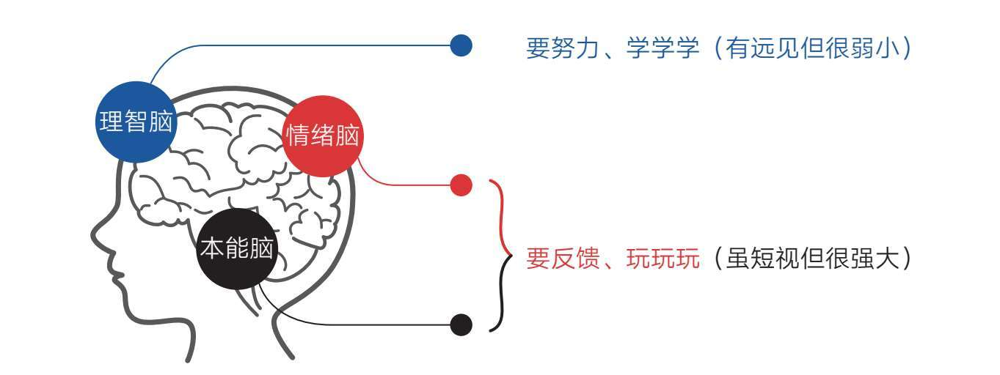
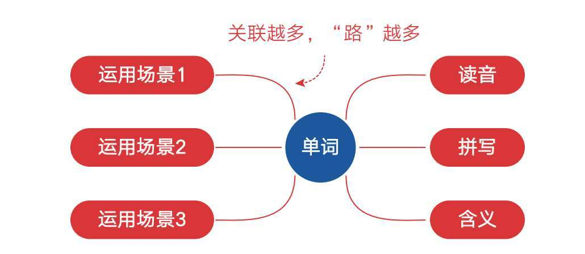
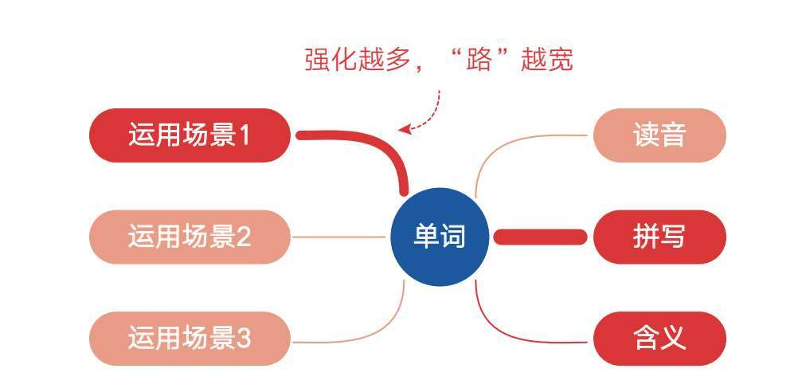
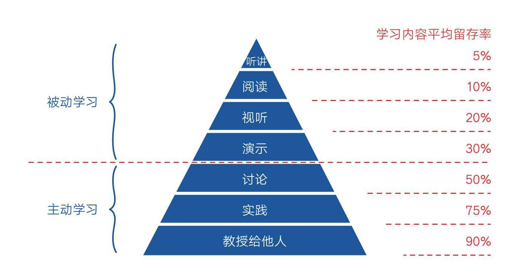

《认知升级》的作者刘传小时候有段神奇的学琴经历：他从零开始学电子琴到考上十级只用了2年，而同龄人取得这一成绩通常要4～5年。更神奇的是，直到考上十级，他都没有学过一点乐理知识，而他的老师也从来不让他学理论。那么他的老师究竟是怎么教的呢？
老师先示范左手，再示范右手，再合起来弹一遍，让我大概知道这一首曲子出来是什么样子。接下来一周我就要努力练成这样子，周末的时候验收。不通过，继续练，通过，再到下一首曲子。如此循环两年，最后练成的曲子直接达到十级。在学习过程当中，完全不接触音乐理论。
至今刘传依然非常感谢他的音乐启蒙老师。虽然不知道乐理，但这并不影响他完整流畅地演奏给别人听，并由此收获即时的夸奖和赞扬。这种反馈会像海浪一样一遍遍冲击着信心这块沙滩，让他始终沉浸在弹琴的乐趣里。
反观现在，多少孩子因为要学习系统枯燥的理论而长期处于乏味的基础练习中——乐理、指法、音律、节拍……家长们要求孩子一遍一遍地练习，多半不是为了马上给他人表演，而是为了完成考级。由于长时间收不到外界的正向反馈，孩子们逐渐将学习视作内心抗拒但又不得不完成的任务。家长们投入了大量金钱，孩子们投入了大量时间，最终却不得不走上“从入门到放弃”之路。
对比二者不难发现：是否有及时、持续的正向反馈，正是产生学习效果差异的关键。
回到刘传学琴的经历。其实刘传有此成就一点也不神奇，因为我们每个人从小就是这样学会说话和走路的。没有人从拼音规则、字母发音开始学习说话，也没有人从力学原理、肌肉控制开始学习走路，我们只是不断地模仿和练习，直接去说、去走，从环境中持续获得反馈，体会乐趣，修正不足。最终，在不知道任何原理的情况下，我们就会说了，也会走了，而且做得还相当不错。
上天给了我们生命的同时，也赋予我们一个强大的学习方法，只是我们不知不觉地忘了它。自从有了文明和理性，人类的学习就逐渐转向了以原理、基础为导向的系统学习，这种方式看似高效，但往往过于注重输入和练习，忽视了输出和反馈，使学习过程变得痛苦、无趣。天下苦学久矣，是时候回归学习的本源了。
在现实生活中，大多数人缺少输出和反馈意识，虽然他们极其理性，甚至能以超越常人的毅力不断地激励自己努力，但最终收获的仍然是痛苦和失败。
比如一名大二的学生“无悔”曾告诉我，他每天从早学到晚，学6天休1天，如此付出，收获的却是无力和疲累；而另一位读者“傅琴”女士也说，为了应对生活危机，她不停地学习瑜伽、写作、肚皮舞、英语口语、绘画、茶道等各种技能，但内心始终得不到满足，感受不到自我价值。
所有处于类似困境的学习者，无论在校的还是在职的，无不认为只要自己努力地输入，不停地学，就一定能学有所成，然而现实总是令他们失望。他们似乎从来没有考虑过要尽快产出点什么，以换取反馈，通过另一种方式来激励自己。也许是因为在人造的学习体制内待久了，有些人很难相信“跳过原理，直接实操”的方式是有效的，他们认为这种方法不过是奇技淫巧，强大的毅力和认知才是学习的正道。
对于这种观点，脑科学家提出了不同的意见。在他们看来，持续的正向反馈才能真正激发本能脑和情绪脑的强大动力。因为人类强大的本能脑和情绪脑虽然没有思维、短视愚笨，时常沉溺于游戏、手机、美食、懒觉……但它们超强的欲望和情绪力量是非常宝贵的行动力资源，如果能让它们感受到学习的乐趣，它们同样会展现强大的行动力，让自己像沉迷于娱乐一样沉迷于学习。
我们的理智脑虽然聪明、有远见，但它势单力薄，真的不适合亲自上阵，真正需要它做的，是运用聪明才智去制定策略，让本能脑和情绪脑不断接受强烈的正向反馈，愉悦地朝着目标一路狂奔（见图4-1）。

图4-1 本能脑和情绪脑是学习的发动机
所以，科学的学习策略是产出作品、获取反馈，驱动本能脑和情绪脑去“玩玩玩”，而不是一味地努力坚持，让理智脑苦苦地去“学学学”。这看起来很违反直觉，但它确实成为优劣学习者之间无形的分水岭。
在校学习的同学可能认为上述场景不适用于自己，因为他们认为自己在学校里学习属于被动学习——不仅无法选择学习内容，课业负担也很重，所以很难像职场人那样用充分自由的时间去产出作品、获取反馈。事实上，只要我们理解了反馈的底层逻辑，在被动学习的场景中同样可以建立正向反馈。
正向反馈通常包括情绪反馈和认知反馈两方面。
·情绪反馈，即有人因为你的表现而肯定你、赞扬你，或做这件事本身就让你感到很愉悦，所以你愿意继续去做并做得更好。
·认知反馈，即有人告诉你什么是对的、什么是错的，让你知道该往哪个方向改进。
情绪反馈和认知反馈往往是相互交织、相互推动的。
比如，刘传每周学会一首曲子并以此获得他人的肯定，这就是外界给他情绪上的反馈；而老师每次告诉他哪里弹得好，哪里弹得不好，应该怎么改进，这就是外界给他认知上的反馈。有了这两种反馈，他弹琴的水平就会越来越高，动力就会越来越强，于是在两年内达到十级的水平。
学霸们的错题本也是如此。他们通过测试把暴露的盲点集中在一起重点攻克，让自己始终游走在学习的拉伸区，自然进步最快。学霸之所以是学霸，不是因为天生如此，而是因为他们仰仗反馈，明晰了盲点，从而比其他人领先了那么一小步，而每一小步的领先都会让他们收获更多赞扬和肯定，同学们觉得他们厉害，他们也认为自己是个“天才”。不知不觉间，“小的正向反馈”带来了“大的正向反馈”，他们的学习也进入了正向循环。
只是很多同学对错题本不以为意，要么不去写，要么写了不去看，要么去看时因为感到痛苦而回避，转头回到舒适区里转悠。在让自己的情绪脑体会到学习的快感之前，我们总得先逼自己一把，对吧？
所以，我们在学习的过程中应该多想办法制造这两种反馈。
比如，在学习英语时不要满足于每日单词打卡，而要尝试去阅读难度适中的英文原版书，让自己直接感受到应用单词的乐趣；学习书法时不要一个人埋头苦练、盲目摸索，而要请教老师、购买课程，用新知来指导自己精进；练习舞蹈时可以多拍摄视频，用外部视角观察自己的动作等。
事实上，就学习知识而言，获取反馈最好的方法是进行自我测试。
据我所知，为了提高学习成绩，很多同学采用的方法往往是一遍一遍不停地学，结果不仅成绩提高有限，还感觉自己学得很机械、没有动力，而真正善于学习的同学往往会通过自我测试主动制造反馈。
他们背单词，不是一遍一遍地看，让所有单词都“看着眼熟”，而是合上书测试自己能否精确地说出单词的含义、发音，并将其拼写出来；他们练听力，不是指望每天重复听音频就能毫不费力地“熏耳朵”，而是回过头来对照原文，不断重听没听懂的地方。
通过测试，自己哪里会、哪里不会便立即掌握得清清楚楚，我们可以精准消灭盲点，让自己始终处在学习舒适区边缘。那种“翻开书全会，合上书全废”的无反馈式努力正是我们被动、落后的根源。
从这个角度看，我们对考试的态度也应该发生转变。因为考试虽然会给我们带来巨大的压力，考不好也会让我们受到一定的打击，但考试也会暴露我们的问题，它会给我们清晰的反馈，告诉自己该往哪个方向改进。所以，同样面对考试失利，有人终日沉浸在受挫的情绪里，有人却将它视为重振自己的跳板，两种不同的态度必然产生不同的学习效果。我想你一定希望自己能成为后者。
一个心态开放的人会感激生活中的痛苦和挫折，因为对他们来说，痛苦是上天给自己的成长提示，毕竟没什么事是比这更直接的反馈了。
特别说明
刘传的学琴理念，即跳过原理，直接实操的方式仅适用于学习的初级阶段。也就是说，采用这一方式，你快速达到60分的水平是可以的，但到了中级或高级阶段，仍然需要系统学习原理，否则走不远。
正如刘传坦言：“到了进阶水平，这种经验型的学习方法就暴露出了缺点。比如我的创作完全靠灵感，没有方法论，灵感只能靠等。再比如，我的大脑处理同一级和弦在不同调之间的迁移能力很差，同样的和弦，换一组调我就不知道怎么弹了。”
不过，反馈的规律是贯穿始终的，无论什么时候，只要能通过产出换取反馈或通过寻求指导获取反馈，你就会不自觉地去钻研探索。
本节要点
1.是否有及时、持续的正向反馈，正是产生学习效果差异的关键。
2.科学的学习策略是产出作品，获取反馈，驱动本能脑和情绪脑去“玩玩玩”，而不是一味地努力坚持，让理智脑苦苦地去“学学学”。
3.正向反馈通常包括情绪反馈和认知反馈，前者让你愿意继续做得更好，后者让你知道该怎么做得更好。
4.对于背记或理解类的学习，获取反馈最好的方法是自我测试。
5.保持开放的心态，因为痛苦是上天给我们的成长提示。
樊登[16]在《认知天性：让学习轻而易举的心理学规律》的推荐序里分享过一个有意思的学习经验。
我上中学的时候经常被班上的女生“围攻”，原因是她们说我都没有努力过，凭什么学习成绩那么好。
我从不相信自己有什么天赋，因为学习真的不容易。但我特别爱考试，没有测验的时候，我就和同学互相出题考着玩。每次大考之前，我不会一遍一遍地看书、看笔记，而是拿出一张大纸，靠自己的回忆把这学期学习的公式、重点、单词、生字、诗词都默写一遍。每门课用一张纸。遇到想不起来的，就使劲想一会儿。最后才查书，补充完善这学期的知识图谱。这样一来，上考场的时候就不会遇到特别意外的题目了。我忘记了这个方法是我自己发明的，还是我爸爸教给我的，总之有效。
通过上一节的知识，你一定知道樊登学习的秘诀就是通过自测获取反馈。但仅仅看到这一点还不够，因为他的经验里还藏着另一个关于学习的秘密：提取。
所谓提取，就是在学习后（最好隔一段时间）进行自测并回忆，从记忆中提取信息。用专业术语来说就是“检索练习”，这种练习不仅可以给我们反馈，还可以让我们对所学知识加深理解、强化记忆，所以它也被研究者称为主动学习的核心。
不过，要想了解“提取”的奥秘，我们需要先了解“关联”和“强化”这两个概念在学习中的作用。只要掌握了它们，我们就可以让学习三剑客为我们服务。
“关联”的意思很好理解，简单地说，就是将两个事物联系起来。
比如，我们想要记住并掌握一个单词，就需要知道它的读音、拼写、含义，还要在一些场景中运用它。一旦掌握了这个单词，我们就会从声音、视觉、思维、场景等方面和它建立关联。它们之间的连接越多，我们对这个单词的理解就越深刻，记忆也就越牢固。
这就好比我们在一个房子四周修了很多条路，我们就能从各个方向到达房子那里，就算其中的一两条路因为长满野草而被废弃，我们也能通过其他的路达到。所谓“条条大路通罗马”，描述的就是这个场景（见图4-2）。

图4-2 关联就是围绕知识“修路”
以上说的是单个知识点，如果我们再将各个知识点进行连接，就可以形成一张巨大的知识网络。就像很多房子通过无数条路相互连接，就可以形成村落、城市。“交通网”越密集，我们对知识的理解、记忆、运用和创意就越厉害。
所以，从宏观上看，学习的本质就是不断在知识之间建立连接。如果我们能跑到大脑内部去观察，也会发现，无论学知识还是学技能，其微观层面上的本质也是两个或多个神经元细胞建立连接并形成强关联的过程。
一旦了解了这一点，我们就很容易明白阿尔茨海默病，即老年痴呆症是怎么回事了——大脑中的神经元连接开始断开，患者会逐渐想不起过去的人、事、知识和技能，甚至连自己的亲人都会忘记。
研究者发现，人的大脑大约从35岁以后开始萎缩，在50岁和70岁左右经历两次自然衰老，第一次衰老会失去一些创新连接的能力，第二次衰老则会在唤起记忆方面出现问题。
坏消息是这个过程像温水煮青蛙，我们对此毫无察觉，且老年痴呆症一旦出现，其结果几乎是不可逆的；好消息是我们可以通过学习来预防。研究人员指出，一个持续学习新事物的人可以不断激发大脑神经元细胞产生新的连接。当然，这类学习指的是那种对你来说是全新的，需要你全神贯注、花费大量精力才能学会的东西，比如学一种新的乐器、没跳过的舞蹈或阅读等。如果只是运用已经熟练的技能，比如看报纸、上班、说母语等，则无助于大脑神经元产生新的连接。
从这个角度看，一个人真正的衰老是从大脑的衰老开始的，而学习是减缓衰老最好的武器。可惜的是，很多人离开学校后就很少主动学习新事物、新技能了，所以我们总会看到这样的现象：有些人到了八九十岁，依然思维敏捷、妙语连珠，而有些人虽然年纪不大，但思维混乱，反应迟钝，二者有天壤之别。这也是我们要终身学习的原因之一。
“强化”的意思也很好理解，就是把“路”修宽（见图4-3）。
如果说我们对某个知识建立了关联，那连接知识的“路”必然是有宽有窄的。可想而知，比起长满杂草的羊肠小道，我们更容易从宽阔的路到达目的地。而拓宽道路最简单的方式就是重复走，就像鲁迅说的：“世上本没有路，走的人多了，也便成了路。”所以，在学习中，反复运用所学的知识，我们对它们的记忆自然会更深刻。

图4-3 强化就是把“路”修宽
拓宽道路的方法还有很多。
比如，一些新奇的解释可能会让你印象深刻。我曾经在短视频里看到一位英语达人分享phenomenon（现象）这个单词的记忆妙招，她是这么描述的。
有人放了一个屁（p）。
是他（he）放的吗？
不是（no）……
是我（me）放的吗？
不是（no）！
原来是你（n）！！！
到现在为止，我都不知道这个单词怎么读，但我记得它的意思和拼写。我敢肯定，我大脑中关于这个单词的拼写的那条“路”一定很宽、很牢固。
科学研究证实，与情绪密切相关的经历和知识，可以被记得很牢。比如某次考试你因为写错了phenomenon这个单词而错失了“优秀”级别，那你一定会对这个单词印象深刻，因为它融合了你一部分痛苦情绪。另外，我们在学习过程中调动的感官越多，我们对事物的记忆也会越牢固。
当然，更普遍有效的方法是下一位剑客的招数——提取。
“提取”就像一个道路检修工人，他一旦开始工作，就会不停地做两件事：
一是检查那些连接是否还在；
二是对连接进行修复或强化。
提取之所以有效，是因为它属于主动学习。
关于主动学习，我们一定要了解一下“学习金字塔”。1946年，美国学者埃德加·戴尔提出了“学习金字塔”理论。之后，美国缅因州国家训练实验室也通过实验发布了“学习金字塔”报告，报告称，人的学习分为被动学习和主动学习两个层次（见图4-4）。
被动学习：如听讲、阅读、视听、演示，这些活动对学习内容的平均留存率分别为5%、10%、20%和30%。
主动学习：如通过讨论、实践、教授给他人，将被动学习的内容留存率分别提升到50%、75%和90%。

图4-4 学习金字塔
可见，我们平时在学习中的很多习惯属于效率较低的被动学习，比如不停地看书复习、在书中做重点标记、听别人讲解等。这看起来很努力，但实际上它们对大脑的刺激微乎其微，犹如蜻蜓点水。
而另一些学习习惯则完全不同，比如学习之后合上书向自己提问、到实际场景中去运用或用自己的语言把学到的知识讲给不懂的人听，等等。这些习惯做起来一定会更难，但它们会深度调动并强化大脑中的连接。
《学习之道》一书的作者芭芭拉·奥克利曾明确指出：主动的回想测试是最好的学习方法之一，比坐在那儿被动地重读材料要好得多。《暗时间：思维改变生活》的作者刘未鹏也说：教是最好的学，如果一件事情你不能讲清楚，十有八九你还没有完全理解。当然，教的最高境界是能用最简洁的话让一个外行人明白你讲的东西。
所以，在今后的学习中，我建议你尽量远离被动学习的习惯，积极运用主动学习的习惯。就像樊登那样，在学习之后，合上书多考考自己，看看自己能回忆起多少内容，能否用自己的话把所学的内容说出来，能否提出自己的问题，能否把概念讲出来，能否在课本外找到例子，能否将新知识和已经掌握的知识联系起来……
不要反复阅读课本，也不必等真正的考试来临才做准备，我们平时就可以进行“低权重的小测验”。因为只要一测试，我们就知道自己最薄弱的学习环节在哪里；只要一回想，我们就能重新巩固记忆；只要一教授，我们就能强化新知与已知之间的联系。
关联、强化、提取就是学习的三把利剑，请务必善用它们。
本节要点
1.关联就是围绕知识“修路”，强化就是把“路”拓宽，提取则是“检修公路”。
2.远离被动学习，主动进行测试、回想和教授。